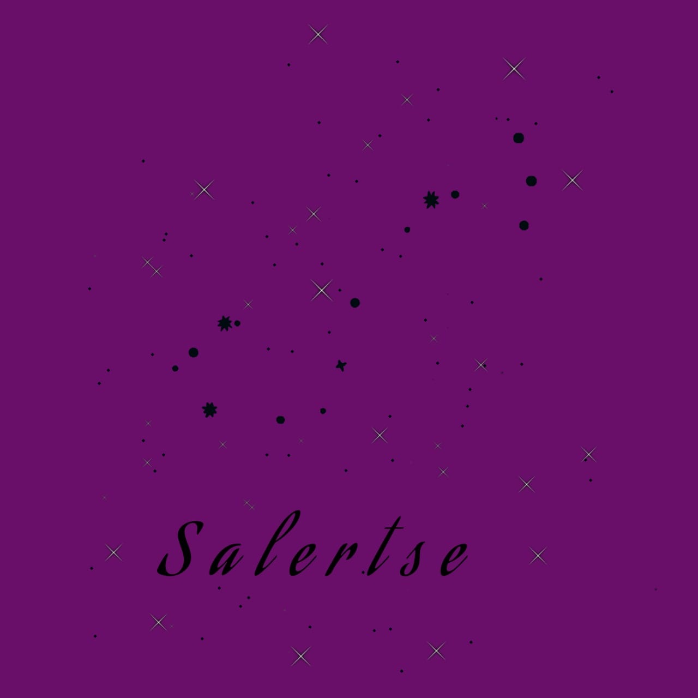
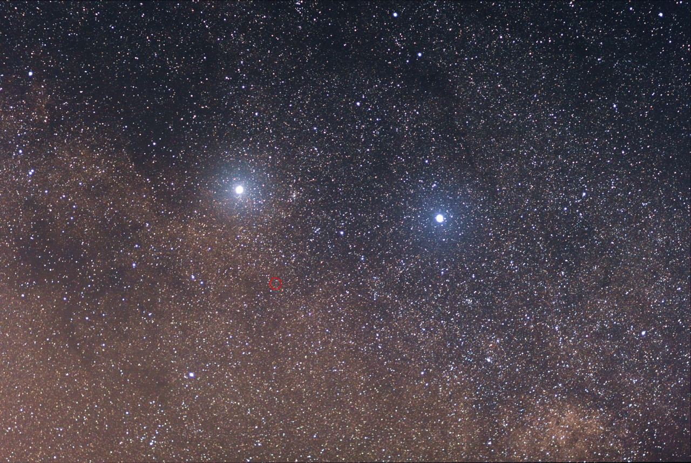
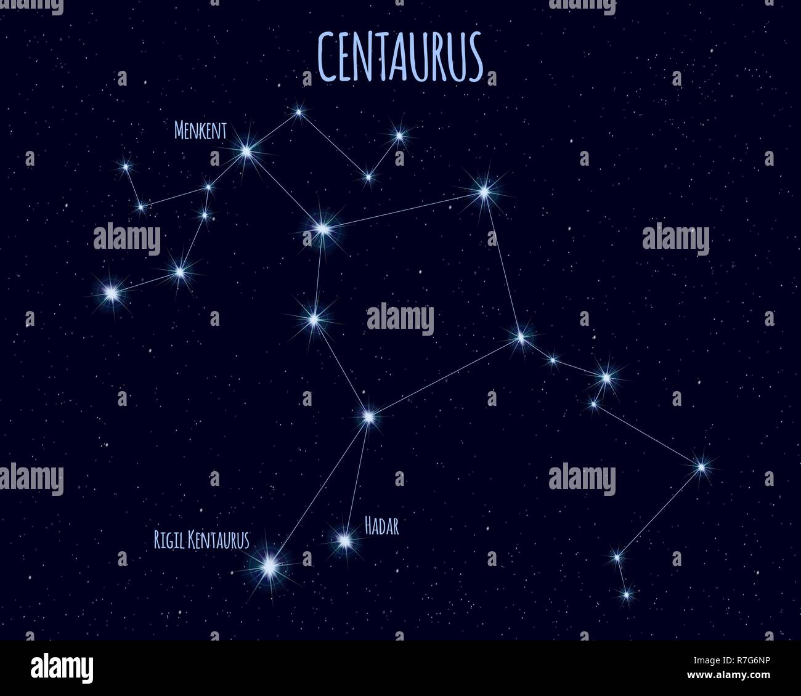

Rigil Kentaurus

Ao lado do Cruzeiro do Sul (a leste) encontramos duas estrelas de brilho notável que parecem tomar conta da menor das constelações.
Não é à toa que ambas são chamadas de Guardiãs
ou Guardas do Cruzeiro em países de linguas portuguesa e espanhola, e Apontadoras
ou Indicadoras (Pointers) no países de lingua inglesa.
Rigil Kentaurus. a mais comum, vem do árabe “Rijl al-Qantūris”, que quer dizer “Pé do Centauro”. A palavra Rigil podemos
encontrar em outras constelações, como em Órion, por exemplo,
sob uma grafia diferente indicando o pé daquele caçador. Há uma forma resumida de Rigil Kentaurus (Rigil Kent) que também é utilizada.

Outro nome que costumamos encontrar nos livros é Toliman. Sua origem é controversa.
Uma bem conhecida é que Toliman vem da palavra árabe “Al-Thalimain”, que significa “Avestruzes”. Até o momento não há
registros históricos ou mitológicos árabes ou europeus fazendo qualquer associação da constelação do Centauro ou daquela
região do céu com essa ave, mas para alguns povos indígenas da América do Sul as estrelas alfa e
beta do Centauro representam dois ovos grandes que uma ema (animal similar ao avestruz) acabara de engolir. Talvez seja
apenas coincidência.
Seja qual for o nome utilizado, devido à sua proximidade com o nosso Sol essa
estrela tem sido bastante citada entre os difusores da Astronomia. Só deve então
tomar cuidado com a maneira de pronunciar o nome da estrela se for optar em chamá-la
conforme a nomenclatura criada por Bayer no século XVII.
É incorreto chamar a estrela de “Alfa Centauro”. A forma correta é Alfa Centauri (com I
no final) , com o genitivo da constelação sendo utilizado junto à letra grega. Como no latim
o genitivo serve para indicar posse, a tradução de Alfa Centauri fica então “Alfa do Centauro”.
Desenvolvedoras:
MARIA LUIZA GONÇALVES PEREIRA
NICOLY RILLARY BRITO DA SILVA